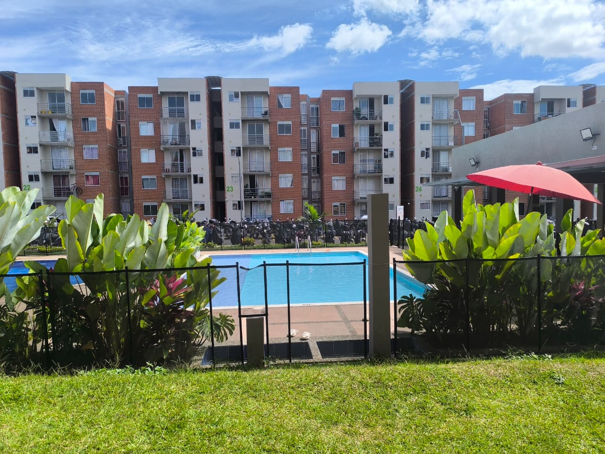
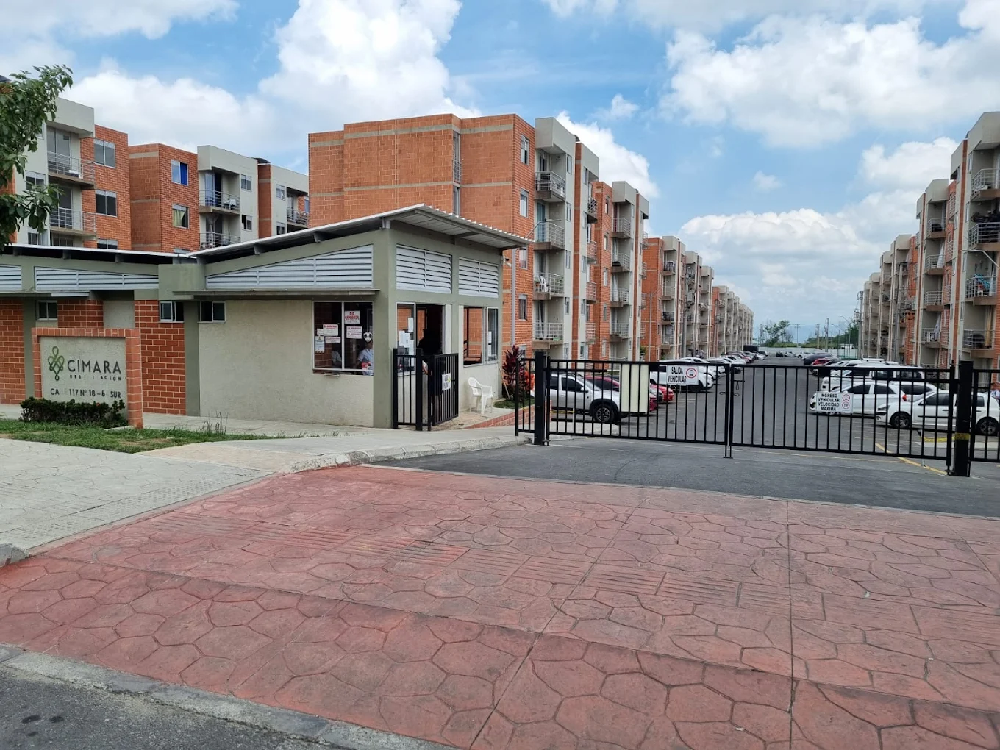
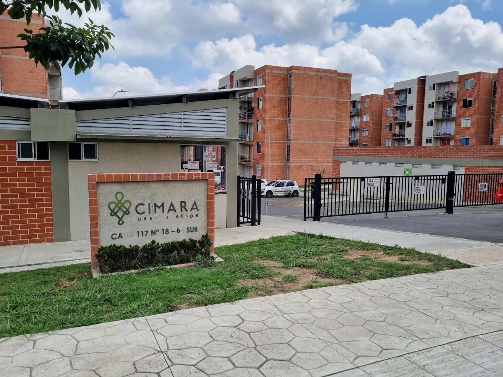

Comunidad
Nuestro Entorno Residencial
Espacios orientados a la convivencia, bienestar y fortalecimiento comunitario.




Plataforma institucional orientada al fortalecimiento administrativo, financiero, documental y operativo del Conjunto Cerrado Cimara PH, promoviendo la transparencia, la participación comunitaria y la recuperación progresiva de la gobernabilidad de la copropiedad.
Espacio institucional orientado a socializar la situación administrativa, financiera, operativa y documental actual de la copropiedad, así como las medidas de estabilización y fortalecimiento institucional en desarrollo.
Unidades Residenciales
Proceso de Estabilización
Participación y Transparencia
Transformación Tecnológica
Procesos orientados al fortalecimiento institucional, sostenibilidad financiera y continuidad operativa de la copropiedad.
Organización y publicación progresiva de información institucional conforme al marco legal aplicable.
Consolidación financiera, control presupuestal, austeridad administrativa y sostenibilidad económica.
Clasificación, recuperación y fortalecimiento del archivo institucional y documental.
Garantía de continuidad administrativa y operativa de los servicios esenciales de la copropiedad.
Mecanismos presenciales y virtuales para fortalecer la participación democrática de los propietarios.
Implementación progresiva de herramientas digitales para optimizar procesos y fortalecer la transparencia.
Espacios orientados a la convivencia, bienestar y fortalecimiento comunitario.


Línea de tiempo preliminar de actuaciones, procesos y medidas institucionales adelantadas.
Presentación inicial de situaciones administrativas, financieras y operativas de la copropiedad.
Inicio de procesos de transición administrativa y continuidad institucional.
Consolidación preliminar de documentación administrativa, tributaria y financiera.
Espacio institucional para socialización de informes y toma de decisiones comunitarias.
Acceso organizado a documentación institucional, comunicados, informes y archivos autorizados para consulta de la comunidad.
La copropiedad proyecta desarrollar estrategias orientadas a la eficiencia administrativa, sostenibilidad financiera, modernización tecnológica y fortalecimiento de la calidad de vida comunitaria.